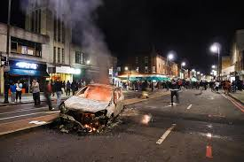

Visible Crime --any crime that can be committed and are acts that the public may consider criminal--Crime that we can observe with the naked eye, Visible crimes cover everything from shop lifting to homicide -- Called "street crime" or "ordinary crime"
Occupational Crime --crime committed by someone during the course of his or her employemnt --Called "workplace crime" --cover a wide variety of criminal acts inclduing theft, money laundering, and the misuse of company property/information
Organized Crime --category of transnational, national or local groupings of highly centralized --framework for the perpetuation of criminal acts
Transtational Crime --profit-seeking criminal activitites that involve planning, execution, or victimization that crosses national borders
Victimless Crime --Offenses involving a williing and private exchange of illegal goods or services that are in strong demand --participants do not feel they are being harmed, but these crimes are prosecuted on the grounds that society as a whole is being injured
Political Crime -- an act, usually done for ideological purposes, that constitutes a threat against the state (treason, sedition, or espionage) --describes a criminal act by the state
Cyber Crime -- offenses that involve the use of one or more computers --criminal motive to intentionally harm the reputation of the victim or cause physical or mental harm, or loss, to the victim directly or indirectyl using modern telecommunication networks (Internet)